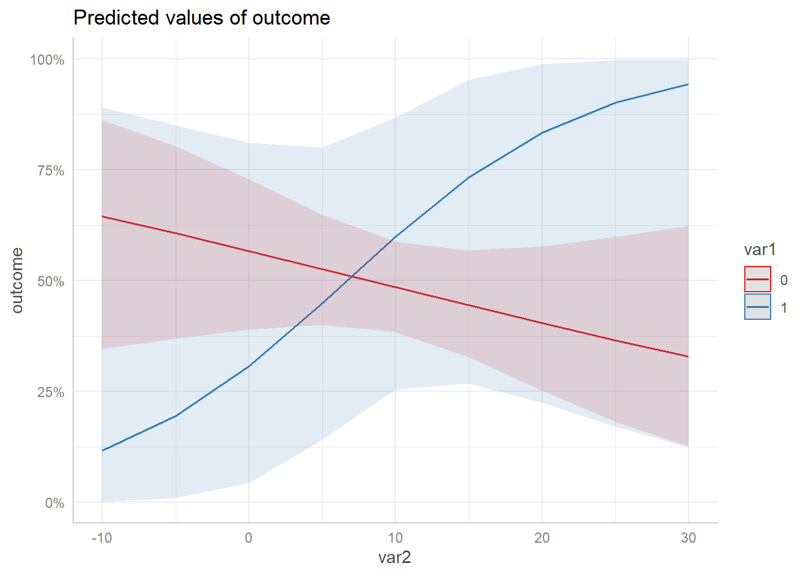

Technical Details: Different Output between Stata and ggeffects
Daniel Lüdecke
2019-10-28
technical_stata.RmdWhy is the output from Stata different from the output from ggeffect?
Stata’s equivalent to the marginal effects produced by ggeffects is the margins-command. However, the results are not always identical. For models from non-gaussian families, point estimates for the marginal effects are identical, but the confidence intervals differ.
Here is an explanation, why there is a difference. First, we fit a logistic regression model.
set.seed(5)
data <- data.frame(
outcome = rbinom(100, 1, 0.5),
var1 = rbinom(100, 1, 0.1),
var2 = rnorm(100, 10, 7)
)
m <- glm(
outcome ~ var1 * var2,
data = data,
family = binomial(link = "logit")
)Example with graphical output
The Stata plot
This is the code in Stata to produce a marginal effects plot.
use data.dta, clear
quietly logit outcome c.var1##c.var2
quietly margins, at(var2 = (-8(0.5)28) var1 = (0 1))
marginsplotThe resulting image looks like this.

The ggeffects plot
When we use ggeffects, the plot slighlty differs.

As we can see, the confidence intervals in the Stata plot are outside the plausible range of [0, 1], which means that the predicted uncertainty from the Stata output has a probability higher than 1 and lower than 0, while ggpredict() computes confidence intervals within the possible range.
Conclusion
It seems like Stata is getting the confidence intervals wrong. Predictions and standard errors returned in Stata are on the (transformed) response scale. Obviously, the confidence intervals are then computed by estimate +/- 1.96 * standard error, which may lead to confidence intervals that are out of reasonable bounds (e.g. above 1 or below 0 for predicted probabilities).
The transformed estimate (on the response scale) is always between 0 and 1, and the same is true for the transformed standard errors. However, adding or substracting approx. 2 * transformed SE to the transformed estimate does no longer ensure that the confidence intervals are within the correct range.
The more precise way to do the calculation is to calculate estimates, standard errors and confidence intervals on the (untransformed) scale of the linear predictor and then back-transform.